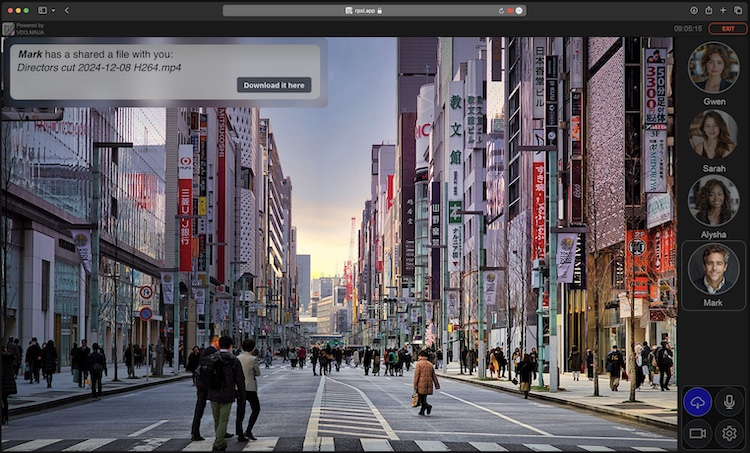
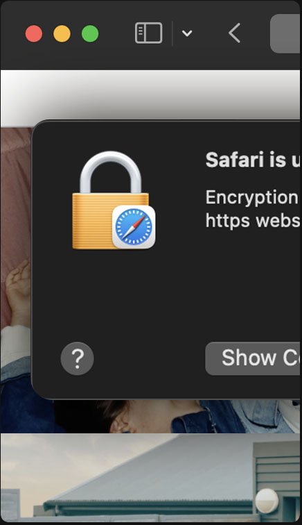

RPXL
Simple,
secure,
serverless,
collaboration.
secure,
serverless,
collaboration.
Using the incredible open source vdo.ninja software created by Steve Seguin.
RPXL is an optimised and simplified front end, focused for realtime, editorial approvals.
Using a peer to peer model and low latency webRTC for instant, high quality streaming from anywhere, to anywhere.
RPXL puts your work front and centre.

No sign-ups, no downloads, no watermarks, no time limits.
Want to stream your timeline for to a remote client for quick feedback and approval? Go ahead.
Clients can join via desktop or mobile to view the stream and if they choose to share their microphone or camera they can communicate with others in the room.
Already chatting to someone on the phone and need quick feedback? Use the Quick share link feature, users will be connected directly to the main stream, no login prompts, no device selection.
Nothing to download, nothing to update.
Want to check out the source? It will give you nightmares but if you feel like a good chuckle... view on Github

WebRTC was designed to be secure from the start, all transfers are encrypted using DTLS (Datagram Transport Layer Security) and SRTP (Secure Real-time Transport Protocol)
Once the handshake server has negotiated the WebRTC connection no further data is sent through it, no messages, no data, not even state management.
Everything is handled, peer to peer. Which means we don't see your data, we don't record your data and we don't use your data to train AI.
All this is handled invisibly and securely behind the scenes, meaning your data is encrypted and stays encrypted.
Because all encoding is handled locally, the more peers connect, the greater the load on your machine, typically about ten clients should be fine.
We also strongly recommend using a wired ethernet connection as wifi has some inherit latency issues that can cause delays and dropped frames.
In order to capture your video stream from your edit package you will either need a capture device, or alternatively use virtual camera software such as OBS or NDI tools.
We prioritised speed and ease of use over absolute colour accuracy and audio sync, but it should still be pretty darn good.
This tool is not meant to replace file sharing services but offer a higher quality alternative when presenting to smaller groups than current screensharing apps.
If you've read this far and still want to give it a go, use the button bellow to get started.